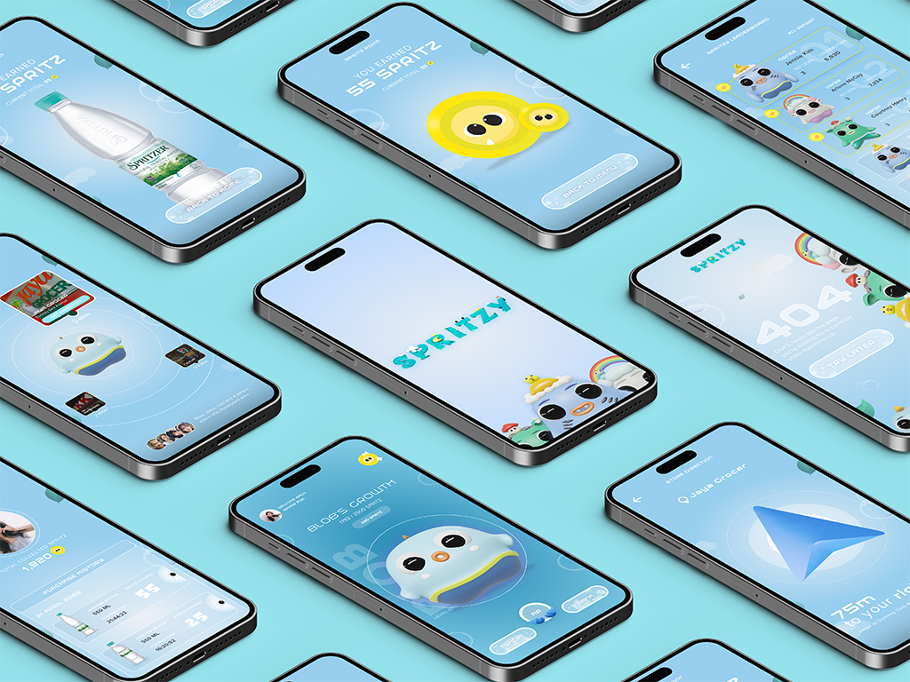
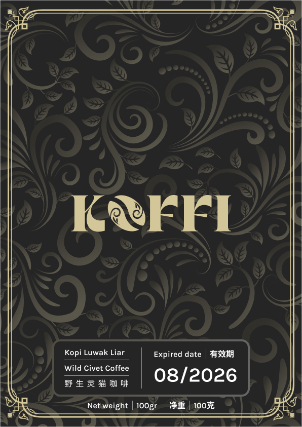

Sphere — Rethinking ad creation end-to-end
A full-scale marketing platform that replaces five fragmented tools with a single, production-ready workspace for planning, creating, and shipping ads.
Problem
Marketers were switching between brief docs, stock search, design tools, and approval workflows — often rebuilding the same ad in three places. Average turnaround for a single campaign stretched past ten working days.
Approach
Interviewed nine marketing teams to map the real flow, prototyped three unified layouts, and aligned with engineering on a modular canvas that could absorb future tools. Delivered design tokens, motion specs, and a handoff playbook.

Outcome
- Campaign turnaround cut from 10 days → 3 days
- Cross-team handoffs reduced by 62%
- Adopted as the default creator for all new campaigns